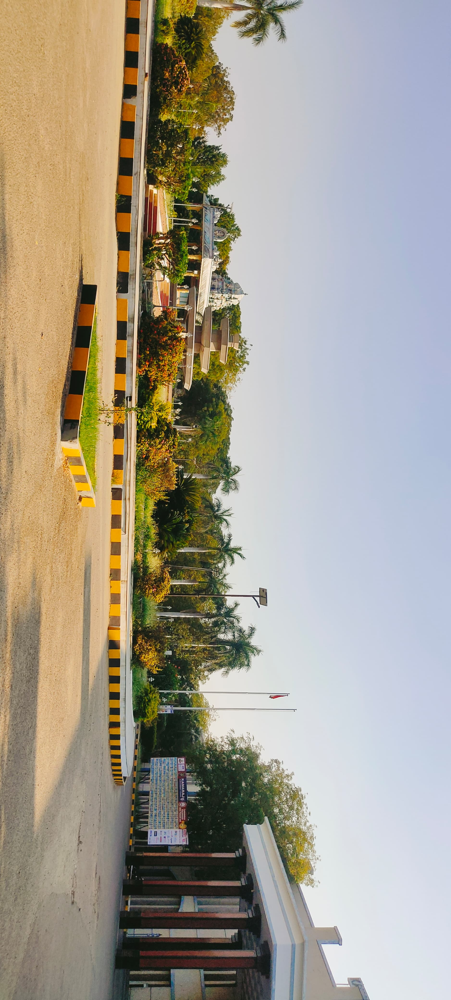
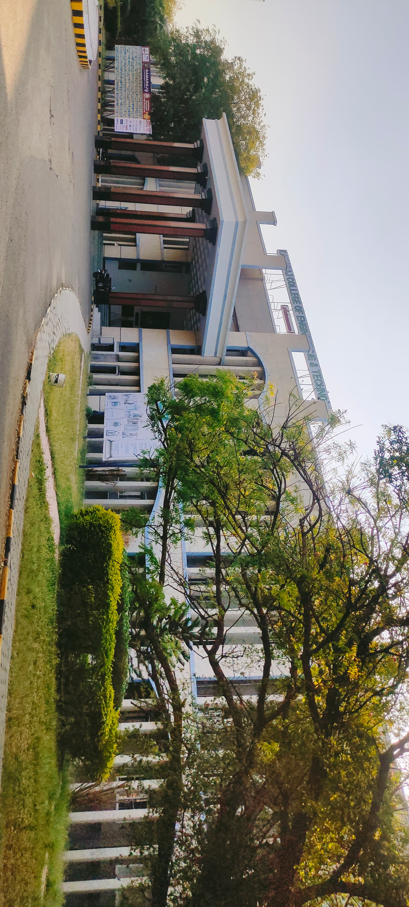
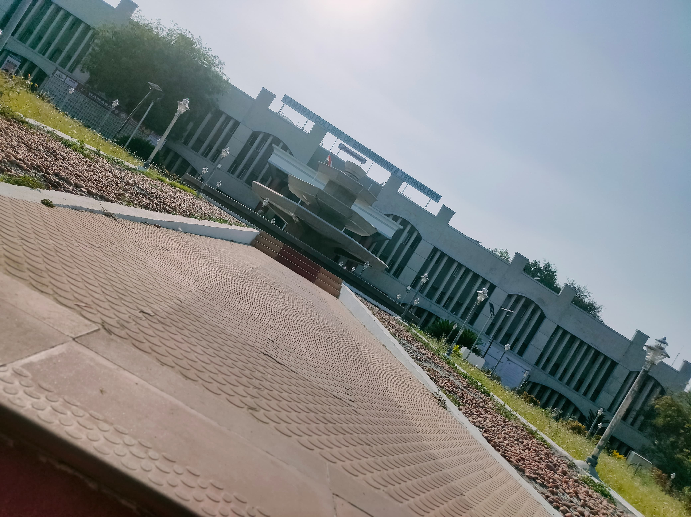
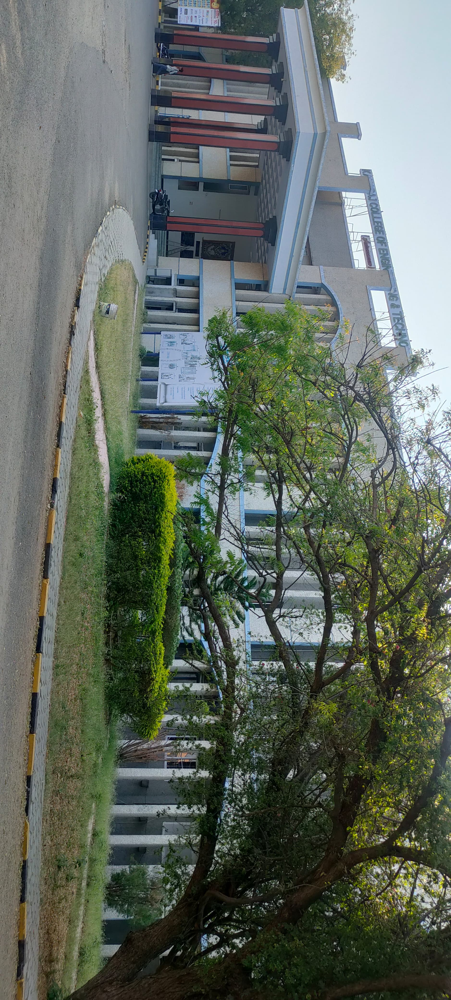
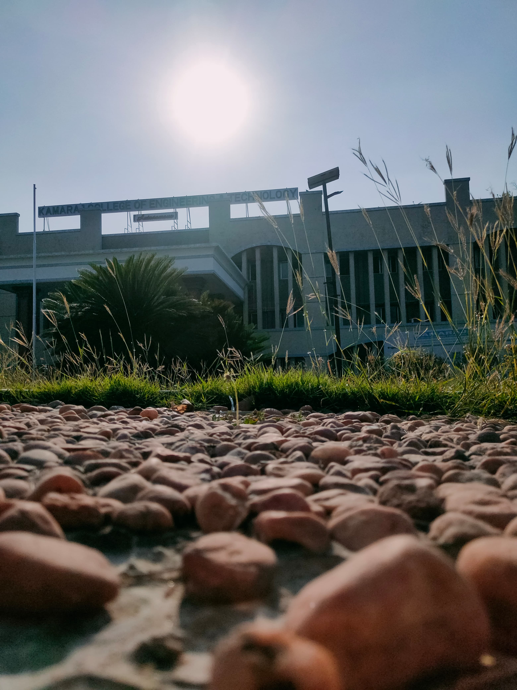
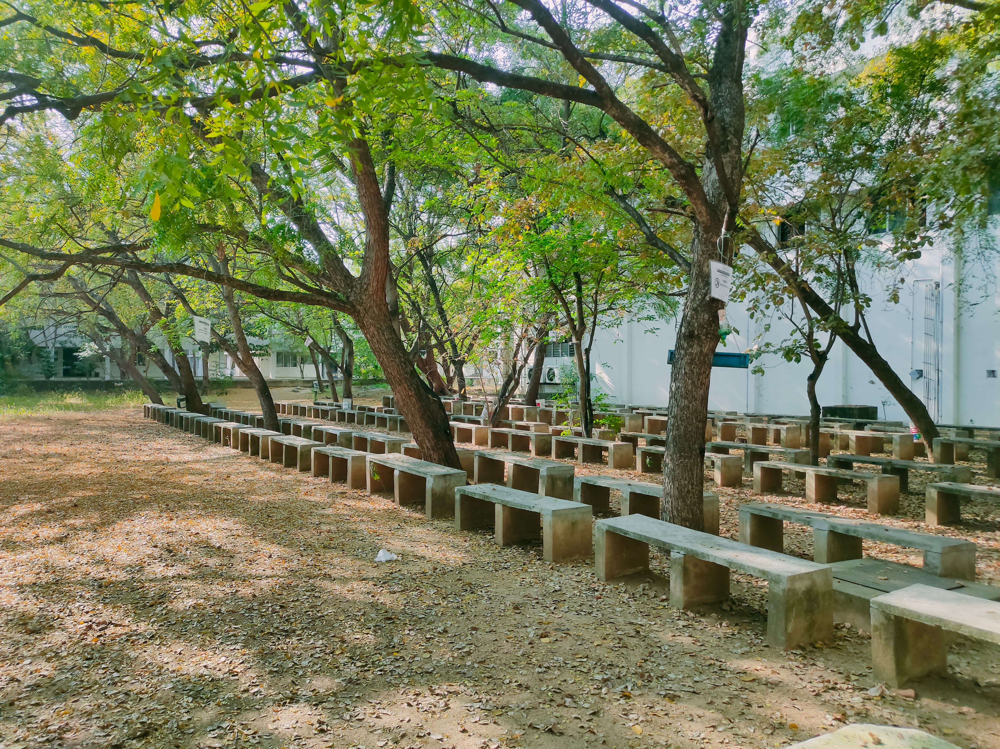
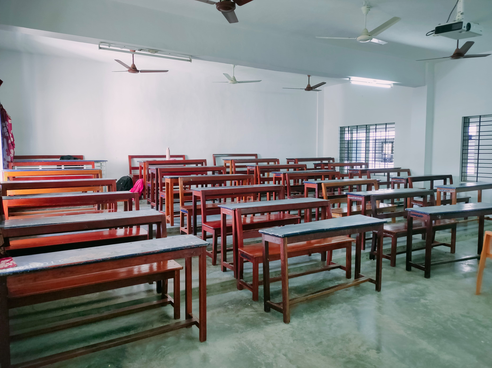

Pictures of our college
1. Kamaraj College is a vibrant and friendly community that enjoys the reputation of being one of the most respected and admired educational institutions in southern Tamil Nadu.
2. The Admin building houses the Central Library, Business Incubation Centre, Research Centre, Alumni Centre, Chess Club, Principal’s Office, and Society Conference Hall. Marine Research Centre has interesting live sea-water animals on display.
3. The campus has various sporting facilities including a full-size Football Ground, Basketball Court, Kabaddi Ground, and Kho-Kho ground.
The other campus buildings include:
1. Admin Block
2. Auditorium
3. Marine Research Centre
4. Vinayagar Temple
5. Canteen
6. Boy’s Hostel Building
7. Girls Hostel Building







- The students hostel offers a variety of infrastructural facilities, including ceiling fans, tables, chairs, cupboards, and a writing pad in each room, bathroom, recreational facilities, gymnasium, purifier, medical facilities, 24*7 Wi-Fi internet connection, tuck shop, CCTV surveillance camera, newspaper reading room, residential doctor to render service to the hostel students, and computer room with 16 systems with 45 Mbps internet connection.
- During working hours, a well-equipped dispensary is accessible on campus. Students who require medical assistance can receive it immediately because the institute has a full-time doctor on campus. A well-equipped gymnasium is available within campus for students and faculty members.
- The library is fully automated and well-equipped with modern amenities. The library has books, journals, CD-ROMs, online journals, question banks, project reports, and other materials. Surveillance video cameras are placed at strategic locations.
- The books and journals are accessed using an Open Access System. The institute has a well-modernized computing environment within the campus, with modernized computer labs with high-configuration computer systems, to meet the demands of industries and to improve the learning of the students.
- In the canteen, hygienic and nutritious foods are available at a reasonable price. A tuckshop is also available that sells snacks and soft drinks for students. A well-equipped laboratory caters to the academic needs of students. During working hours, students can make use of the lab at any time.
The overall surroundings in one clip:
Touch the below link to view:
Video clip of the college
Home page